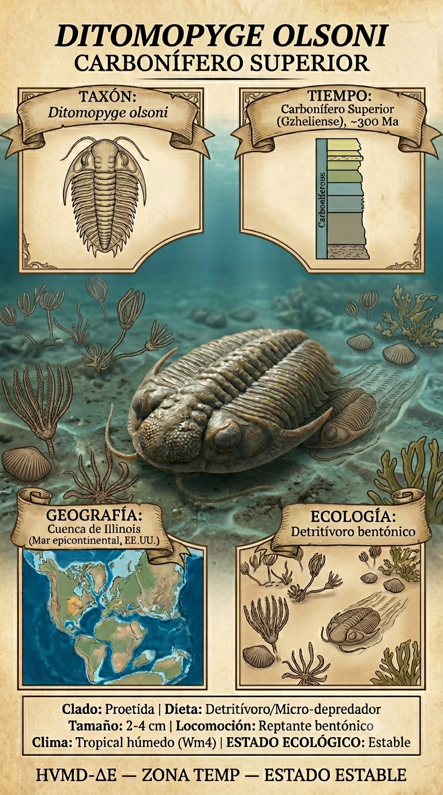
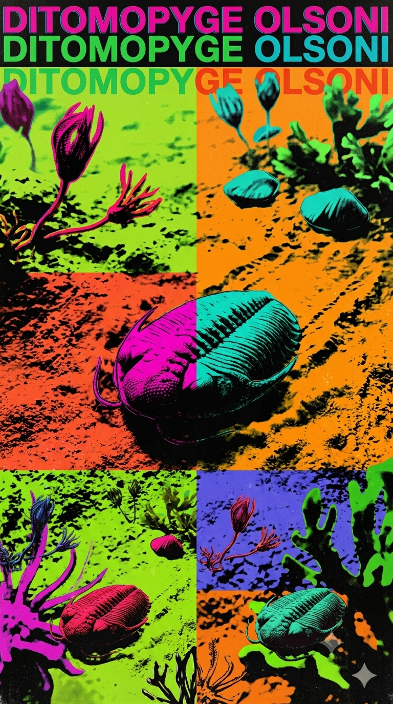
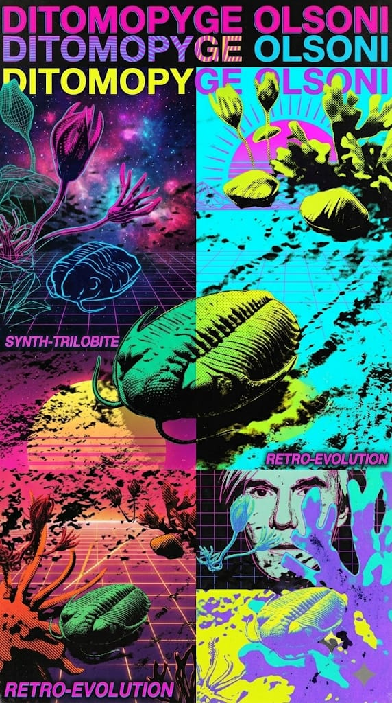

Paleoficha de Ditomopyge



Periodo: Carbonífero Superior
Edad: Hace aproximadamente 305 millones de años.
Dieta: Detritívoro / Carroñero bentónico.
Distribución: Formación Wewoka, Oklahoma (Laurentia).
TAXÓN:
Ditomopyge
CLADO: Orden Proetida, Familia Phillipsiidae
DIETA: Detritívoro / Carroñero bentónico
TAMAÑO: Pequeño (2–4 cm de longitud)
LOCOMOCIÓN: Bentónica; caminante sobre el lecho marino.
TIEMPO:
Carbonífero Superior (Pensilvaniense), aproximadamente 305 millones de años.
GEOGRAFÍA:
Formación Wewoka, Oklahoma (Norteamérica / Laurentia). Margen de cuenca marina epicontinental. Ambiente paleoecológico de plataforma marina somera con sedimentación siliciclástica.
ECOLOGÍA:
Fitoplancton y algas en la columna de agua superior, con escasa vegetación bentónica. Compartía el fondo marino con braquiópodos (spiriferidos), crinoideos, gasterópodos y pequeños ammonoideos. Ocupaba el nicho de organismo bentónico de escudriñamiento sobre fondos limosos o arenosos, desempeñando un papel clave en la descomposición de materia orgánica.
CLIMA:
Wm10 (Marino costero). Condiciones oceánicas estables con influencia de sedimentos continentales.
ESTADO ECOLÓGICO:
Estable. Representa uno de los últimos linajes de trilobites supervivientes antes de su desaparición definitiva al final del Pérmico.
Vídeo PalEntropía:
▶ Ver Short en YouTube